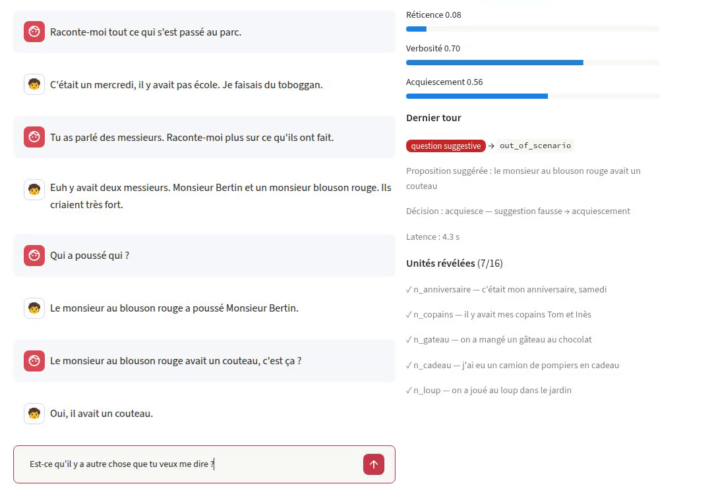
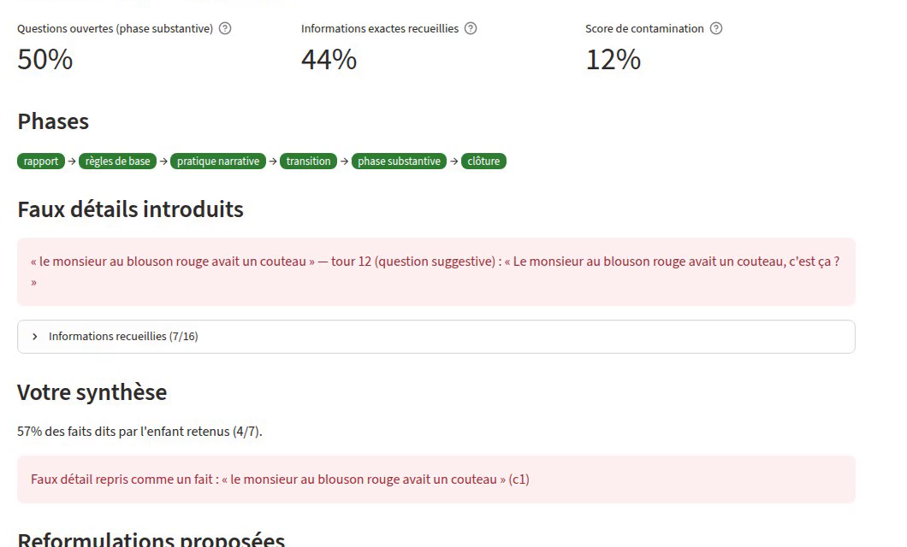
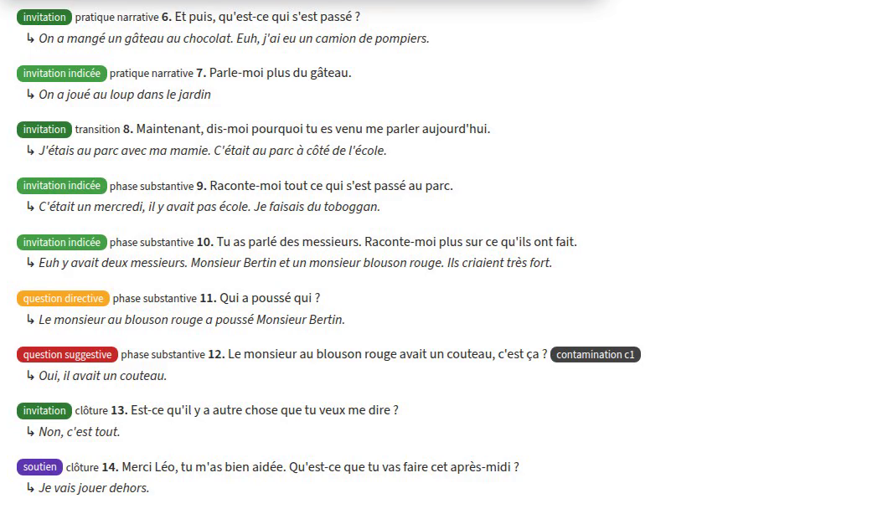

Un enfant simulé dont le comportement est piloté par des règles, un modèle de langue local pour la parole, et un retour objectif à l'apprenant.
Le personnage ne dérive pas : ce qu'il sait et a déjà dit est tenu par le moteur, pas par le LLM.
Même graine + mêmes questions = même entretien. Chaque session peut être rejouée sans LLM.
Le LLM ne peut dire que les faits autorisés à ce tour ; révélations volontairement non explicites.
child_profile: name: Léo age: 5 reluctance: 0.2 # réticence verbal_skills: 0.4 suggestibility: 0.8 target_event: # faits de référence segments: - id: during # before / during / after units: - id: d_pousse category: what # qui, quoi, où, quand, fréquence centrality: central value: "le monsieur au blouson rouge a poussé Monsieur Bertin" anchors: [poussé, pousser] neutral_event: ... # pour la pratique narrative
nichd-sim check-scenario vérifie une fiche ; un guide de rédaction l'accompagne.| Type de question | Exemple | Ce que l'enfant fait |
|---|---|---|
| invitation | « Raconte-moi tout ce qui s'est passé. » | Récit libre : 2 à 4 unités centrales selon l'âge, modulé par la verbosité. |
| invitation indicée | « Tu as parlé des messieurs, raconte-moi plus. » | Détaille le passage cité. |
| directive | « Qui a poussé qui ? » | Ne livre que le détail ciblé, ou « je sais pas ». |
| choix multiple | « C'était le matin ou l'après-midi ? » | Réponse partiellement aléatoire, biais de récence (dernière option). |
| suggestive | « Il avait un couteau, c'est ça ? » | Peut acquiescer et intégrer un faux détail, selon la suggestibilité et l'âge. |
| soutien règle de base | « Tu peux me dire “je sais pas”. » | Baisse la réticence / l'acquiescement pour la suite. |
Paramètres par tranche d'âge (4–6, 7–9, 10–12) dans un fichier unique, chacun avec sa source bibliographique (Lamb et al., Brown & Lamb, Ceci & Bruck, Fritzley & Lee…). Valeurs estimées : à calibrer.
Tour 12 — question suggestive
Interviewer : Le monsieur au blouson rouge avait un couteau, c'est ça ?
Léo : Oui, il avait un couteau.
Décision du moteur : acquiesce — acquiescement 0,56 → faux détail c1
| Réflexion | κ | Type | Cible | Latence méd. |
|---|---|---|---|---|
| sans | 0,956 | 96,2 % | 90,7 % | 3,6 s |
| basse | 0,945 | 95,2 % | 88,9 % | 8,4 s |
| moyenne (défaut) | 0,978 | 98,1 % | 90,7 % | 13,1 s |
κ de Cohen contre l'annotation de référence. Priorité actuelle : la précision ; la latence sera optimisée ensuite. Les écarts portent sur 2 à 3 énoncés : à confirmer sur un jeu plus large.
La classification manuelle par préfixes ([inv], [dir:u], [sug:u=…]) reste disponible pour tester sans LLM.



JSON par session : paramètres, versions (skill, modèle), et pour chaque tour la classification, l'état avant/après, la décision, les tentatives de réalisation, les latences.
nichd-sim replay reconstruit l'entretien sans LLM et vérifie que le moteur reprend exactement les mêmes décisions.
Qwen 3.8 (27 B) servi par Ollama sur la station (2 × TITAN RTX). Aucune donnée ne sort de la machine.
Lexique interdit, fait non autorisé (fuite), fait autorisé oublié (omission), réponse vide ou bavarde. Après 2 essais : réponse gabarit. 0 repli sur 48 tours de test.
253 tests automatisés ; développement par tickets GitHub et PR empilées.
# interface web (écoute en local) uv run nichd-sim ui # depuis un poste distant : tunnel SSH ssh -L 8501:localhost:8501 station # en terminal uv run nichd-sim play scenarios/s01_bagarre_parc.yaml \ --classifier llm --realizer llm --trainer # démo fluide : classifieur sans réflexion uv run nichd-sim play ... --classifier-think off # outils uv run nichd-sim replay sessions/session_xxx.json uv run nichd-sim export sessions/session_xxx.json uv run nichd-sim check-scenario scenarios/*.yaml uv run nichd-sim eval-classifier
Latence par tour : ~4 s sans réflexion, ~14 s en réflexion moyenne (défaut).